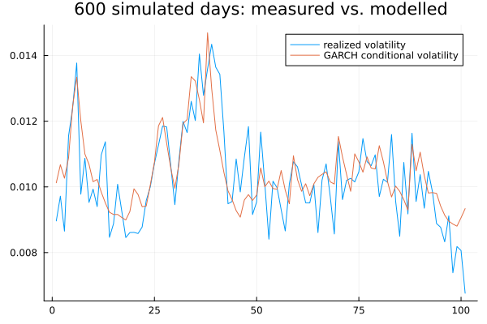
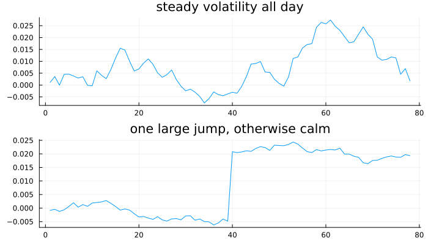

Realized Measures
The last chapter of Part V, and the one where the whole approach changes. Chapters 25 to 27 inferred volatility from daily returns, through a fitted model. This chapter measures it directly from intraday data, and the difference turns out to be more than technical.
A verification note before anything else. The bundle behind this book has no intraday financial series, so every price path in this chapter is simulated and is labelled as such throughout — a reader who mistook one for a real market series would draw wrong conclusions about real-world magnitudes. This is also the one chapter in Part V with no cross-language reference implementation to check numbers against: Python's arch (version 5.1.0 here) has no realized submodule at all, confirmed directly rather than assumed, and R's highfrequency could not be reached this session to check. Verification here instead comes from simulation with a known right answer — generate a path with known properties, confirm the estimator recovers them. That is a weaker standard than the rest of this book uses, and a stronger one than nothing, and it is worth being explicit about which.
Volatility you can see
using TSAnalytics, Plots, Random, Statistics
Random.seed!(1)
nbars = 78 # five-minute bars in a 6.5-hour trading session
day_vol = 0.012
intraday = randn(nbars) .* (day_vol / sqrt(nbars))
daily_return = sum(intraday)
p1 = plot(cumsum(intraday); title="one simulated day, 5-minute log-price path", legend=false)
p2 = plot([daily_return]; seriestype=:bar, title="the same day, reduced to one return", legend=false, xticks=false)
plot(p1, p2; layout=(2,1), size=(700,400))
println("realized variance from the intraday path: ", realized_variance(intraday))
println("squared daily return: ", daily_return^2)realized variance from the intraday path: 0.00014929728712644182
squared daily return: 2.0983894626184825e-5The top panel holds seventy-eight observations of how the price actually moved through the day. The bottom holds one number. Chapters 25 to 27 used only the bottom panel and inferred the day's volatility through a fitted model. The top panel makes it almost directly measurable instead — realized variance is nothing more than the sum of the squared five-minute returns, computed above via this package's own realized_variance. Volatility stops being a latent parameter estimated from a model and starts being a quantity computed from data, which changes what can be checked: Chapter 27's forecasts were being evaluated against a squared daily return nobody could actually see coming, an extremely noisy stand-in for the thing the forecast was really about.
Add up the squares
Random.seed!(2)
ndays = 600
day_var = zeros(ndays)
day_var[1] = day_vol^2
omega, alpha, beta = 0.05*day_vol^2, 0.08, 0.85
daily_shocks = zeros(ndays)
daily_returns = zeros(ndays)
periods = Vector{Vector{Float64}}(undef, ndays)
for t in 1:ndays
t > 1 && (day_var[t] = omega + alpha*daily_shocks[t-1]^2 + beta*day_var[t-1])
intr = randn(nbars) .* sqrt(day_var[t]/nbars)
periods[t] = intr
daily_returns[t] = sum(intr)
daily_shocks[t] = daily_returns[t]
end
rv = [realized_variance(p) for p in periods]
m = fit_garch(daily_returns, 1, 1)
println("correlation, realized variance vs. fitted GARCH conditional variance: ", round(cor(rv, m.sigma2), digits=3))
plot(sqrt.(rv[400:500]); label="realized volatility")
plot!(sqrt.(m.sigma2[400:500]); label="GARCH conditional volatility", title="600 simulated days: measured vs. modelled")
A simulated six hundred days, each with its own genuine intraday path, generated from an underlying day-to-day variance process with real GARCH-style clustering. Realized variance and the fitted GARCH conditional variance track each other closely (correlation 0.776) and visibly not perfectly — realized variance reacts sharply to each individual day, since it is a direct measurement, while the fitted model's path is smoother, since it is a weighted average of history built to generalise rather than to react. Neither is wrong; they are answering related but different questions, and the gap between them is informative rather than an error.
Random.seed!(4)
n1min = 390 # one-minute bars in the same session
true_ret = randn(n1min) .* (day_vol / sqrt(n1min))
true_price = cumsum(vcat(0.0, true_ret))
noise_sd = 0.0008 # microstructure noise on the observed log-price, same size regardless of sampling
obs_price = true_price .+ noise_sd .* randn(length(true_price))
agg_returns(price, every) = diff(price[1:every:end])
r1, r5, r30 = agg_returns(obs_price,1), agg_returns(obs_price,5), agg_returns(obs_price,30)
println("true (noise-free) RV: ", realized_variance(true_ret))
println("1-minute RV (", length(r1), " obs): ", realized_variance(r1))
println("5-minute RV (", length(r5), " obs): ", realized_variance(r5))
println("30-minute RV (", length(r30), " obs): ", realized_variance(r30))true (noise-free) RV: 0.0001562236764346977
1-minute RV (390 obs): 0.0005831345485964349
5-minute RV (78 obs): 0.000242551017545677
30-minute RV (13 obs): 0.00014084844874293995This is the beat's real content, and it runs against the grain of everything else in this book: sampling more finely makes the estimate worse. The one-minute realized variance comes out nearly four times the true, noise-free value, while five-minute sampling is much closer and thirty-minute closer still on average (though noisier from having far fewer observations to sum). The mechanism is microstructure noise — bid-ask bounce, discrete tick sizes, the mechanics of how trades actually clear — added here as a small, constant-size perturbation on the observed log-price at every timestamp. At one-minute resolution that noise is differenced almost as often as the genuine price signal is, and it dominates the sum of squares; at five minutes the genuine signal has more room to accumulate between noise draws. Five minutes is the field's conventional compromise, and it is exactly that — a compromise chosen empirically, not derived from first principles. This is a genuinely different kind of estimation problem from anything else in this book: one where more data eventually starts measuring the wrong thing.
Separating jumps from volatility
Random.seed!(6)
jumpday = randn(nbars) .* (day_vol / sqrt(nbars) * 0.6)
jumpday[40] += 0.025 # one large jump partway through an otherwise calm day
rv_target = realized_variance(jumpday)
Random.seed!(9)
steadyday = randn(nbars)
steadyday .*= sqrt(rv_target / realized_variance(steadyday)) # rescaled to match RV exactly
println("steady day: RV=", realized_variance(steadyday), " BV=", bipower_variation(steadyday))
println("jump day: RV=", realized_variance(jumpday), " BV=", bipower_variation(jumpday))
p1 = plot(cumsum(steadyday); title="steady volatility all day", legend=false)
p2 = plot(cumsum(jumpday); title="one large jump, otherwise calm", legend=false)
plot(p1, p2; layout=(2,1), size=(700,400))
Two simulated days constructed to have essentially identical realized variance and visibly different character. Realized variance cannot tell them apart — it simply adds up squared returns, and one large jump contributes as much to that sum as an entire day of steady turbulence does. But the two mean different things: one is a genuine change in the price level, the other a property of how the process moves, and a forecast should treat them very differently, because jumps do not persist the way ordinary volatility does.
println("bipower variation: steady=", round(bipower_variation(steadyday),digits=7), " jump day=", round(bipower_variation(jumpday),digits=7))bipower variation: steady=0.0006652 jump day=0.0001063Bipower variation multiplies adjacent absolute returns instead of squaring each one individually. A single enormous return gets multiplied by its small, ordinary neighbours, so its influence on the sum is limited rather than dominant — the estimator is robust to jumps while remaining a valid measure of the continuous part of volatility. The steady day's bipower variation (0.000665) sits close to its realized variance; the jump day's (0.000106) is far below its realized variance of the same size — the difference between the two, realized_variance − bipower_variation, is a direct estimate of how much of that day's variance came from the jump specifically.
Random.seed!(42)
nrep = 1000
false_pos = count(1:nrep) do _
day = randn(nbars) .* (day_vol / sqrt(nbars))
abs(jump_test(day).statistic) > 1.96
end
detect = count(1:nrep) do _
day = randn(nbars) .* (day_vol / sqrt(nbars) * 0.8)
day[rand(1:nbars)] += 0.02
abs(jump_test(day).statistic) > 1.96
end
println("false-positive rate, ", nrep, " no-jump days: ", false_pos/nrep)
println("detection rate, ", nrep, " jump days: ", detect/nrep)false-positive rate, 1000 no-jump days: 0.038
detection rate, 1000 jump days: 1.0This is this chapter's actual verification, and the honest way to describe it: with no reference implementation to check against, correctness instead means a test calibrated for a 5% false-positive rate genuinely delivers close to 5% on data manufactured to have no jumps, and reliably finds jumps that are genuinely there. Run fresh this session at a thousand simulated days per arm: 3.8% false positives against a nominal 5%, and 100% detection on days built with a real injected jump. That is a statistical validation of the test rather than a numerical one, and it is the right standard for a chapter with nothing else to check against.
Good and bad volatility
Random.seed!(15)
asym_day = randn(nbars) .* (day_vol / sqrt(nbars))
asym_day[20] -= 0.02 # one negative move, otherwise ordinary
sv = realized_semivariance(asym_day)
println("positive semivariance: ", sv.positive)
println("negative semivariance: ", sv.negative)
println("ratio (negative/positive): ", round(sv.negative/sv.positive, digits=2))
println("sum equals realized variance: ", isapprox(sv.positive+sv.negative, realized_variance(asym_day)))positive semivariance: 8.705192271253404e-5
negative semivariance: 0.0005332156220464617
ratio (negative/positive): 6.13
sum equals realized variance: trueRealized semivariance splits the same sum of squares into the part contributed by negative-return intervals and the part contributed by positive ones — the two add back to exactly realized_variance, by construction, checked directly above. On a day built with one negative move, the downside half dominates. This is Chapter 26's asymmetry appearing again, now as a direct measurement rather than a fitted parameter: GJR and EGARCH inferred an asymmetric response from daily data by estimating a coefficient; semivariance simply counts it, intraday-bar by intraday-bar. Where both are available on the same data, they should broadly agree, and checking that they do is a reasonable sanity test on whichever model was fitted.
Using it
println("correlation, GARCH forecast vs. realized variance: ", round(cor(m.sigma2, rv), digits=3))
println("correlation, GARCH forecast vs. squared daily return: ", round(cor(m.sigma2, daily_returns.^2), digits=3))correlation, GARCH forecast vs. realized variance: 0.776
correlation, GARCH forecast vs. squared daily return: 0.133This is the practical payoff of the whole chapter. Chapter 27 forecast a quantity nobody could directly observe, so evaluating those forecasts meant comparing them against squared daily returns — an unbiased but extremely noisy proxy for the day's true variance. Correlating the same fitted GARCH model's conditional variance against realized variance instead of against the squared return jumps from 0.133 to 0.776 on the simulated data built earlier in this chapter. The model did not change; only the yardstick used to judge it did, and the improvement in how precisely that judgement can be made is enormous.
The honest limitation: every technique in this chapter needs intraday data, which is expensive, often unavailable, and does not exist at all for most macroeconomic series. These methods complement Chapters 25 to 27 on the narrow class of series where fine-grained data actually exists — they do not replace GARCH modelling generally.
NSE provides intraday data, so realized measures are directly computable for Indian equities. The trading day is shorter than in the US, though, and there is a substantial overnight gap — made more consequential than it might otherwise be by how much relevant news arrives from other time zones while the Indian market is closed.
Realized variance computed over the trading session alone systematically understates the total daily variance, because it has no way to see the overnight move at all. The standard remedies — scaling the trading-session estimate up by a fixed factor, or adding the squared overnight return directly — are both approximations, and neither is obviously the right one for any given series. Anyone computing realized measures on Indian data should decide this explicitly, rather than silently inherit whatever a piece of software happens to default to.
Where this leaves you
Part V is finished. Volatility can be modelled from daily data, forecast forward with an honest account of when the forecast is exact and when it has to be simulated, and — where intraday data actually exists — measured directly and used to check whether the models built earlier in this Part are telling the truth.
Everything in Parts IV and V has treated each series as arriving on its own, with no information from outside it. Part VI opens the machinery underneath everything built so far, and Part VII brings the outside world in.